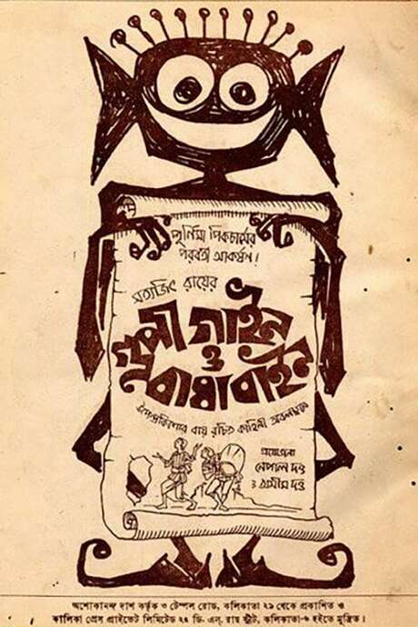
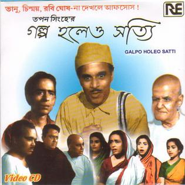

Pather Panchali (The song of the road)
One of my favorite movies. Made in the year ~1955, this movie revolves around the life of Apu in a remote village in India. Using simple and inoovative photography techniques, unique screenplay and direction, Satyajit Ray announced his way into cinema.

Image courtesy - wikipedia
Gupi Gayen Bagha Bayen
One of Ray's materpieces for the kids.
Image courtesy - wikipedia
Galpo Holeo Satyi
In an immersive family setting in urban Calcutta, Tapan Sinha illustrates how little things, like pat on the back and some patronization can really help people beleive in themselves.
Image courtesy - wikipedia